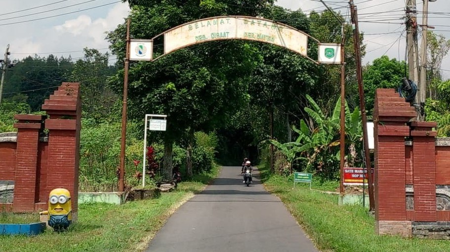

DESA CISAAT MASLAHAT
Desa Cisaat Kecamatan Ciater Kabupaten Subang Provinsi Jawa Barat
PROFIL DESA
.jpg)
Sejarah Desa
1. Legenda Desa Cisaat: Desa Cisaat merupakan sebuah desa yang berada di wilayah kerja Kecamatan Ciater Kabupaten Subang sebelah selatan tepatnya dilereng utara kaki gunung Tangkuban Parahu yang dikelilingi oleh hamparan kebun teh milik PTPN VIII Ciater, desa Cisaat memiliki 10 kampung, 4 Dusun, 6 RW dan 28 RT. Desa Cisaat dahulu adalah merupakan salah satu desa di kecamatan Sagalaherang kabupaten Purwakarta (Karawang Timur) ibukotanya Subang dan pada tanggal 5 Mei 1948 kabupaten Purwakarta dimekarkan sehingga Sagalaherang merupakan salah satu kecamatan di kabupaten Subang, pada tanggal 21 Mei tahun 1979 kecamatan Sagalaherang mengalami pemekaran yang pertama menjadi 2 kecamatan yaitu kecamatan Sagalaherang dan Jalancagak, Desa Cisaat merupakan salah satu desa yang tercatat berada di kecamatan Jalancagak pada saat itu sampai dengan tahun 2008 tepatnya pada tanggal 08 Mei 2008 kecamatan Jalancagak mengalami pemekaran kembali menjadi 3 kecamatan yaitu kecamatan Jalancagak, Kasomalang dan Ciater, dan semenjak tahun 2008 inilah Desa Cisaat merupakan salah satu desa yang berada di wilayah kerja kecamatan Ciater kabupaten Subang sampai sekarang.
2. Mengingat sejarah Desa Cisaat berawal dari kawasan Sagalaherang yang merupakan pusat pemerintahan yang ada di wilayah Subang pada saat itu pemerintahannya dipimpin oleh Suwargi Eyang Rd. ARYA WANGSA GOFARANA, Desa Cisaat pun tidak terlepas dari rangkaian sejarah Pemerintahan Sagalaherang dalam hal ini dibuktikan dengan banyaknya para petinggi / pejabat Pemerintahan Sagalaherang pada masanya yang tinggal di padukuhan Cisaat termasuk keturunannya yang dikebumikan di Desa Cisaat.
3. Padukuhan Cisaat adalah Identik dengan kehidupan seorang tokoh Suwargi EYANG PATIH (Petinggi Sagalaherang) penyebar agama Islam di kawasan Sagalaherang Wetan tepatnya di Padukuhan Cisaat. Sebagai seorang yang patuh dan taat pada ajaran agama islam beliau juga sangat gigih dalam berkarya dan bekerja, beliaulah yang pertama membuka hutan dan semak belukar menjadi grumbul-grumbul untuk pemukiman dan areal pesawahan yang cukup luas meliputi beberapa Grumbul diantaranya 1. Grumbul Ciheas yang sebelumnya tumbuh pohon Gadog yang besar dan rindang dibawah pohon tersebut terdapat mata air yang keluar berbunyi mendesis (ngaheas) sehingga di sebut Ciheas dan selanjutnya pada suatu ketika ada seseorang yang nebang pohon Gadog tersebut dan kemudian sebelum tumbang dari pohon tersebut banyak keluar ulat bulu sehingga menggangu ketemtraman dan kenyamanan warga yang bermukim di tempat tersebut. Sehingga akhirnya salah seorang tokoh / sesepuh mencari kembali tempat pemukiman yang baru tidak terlalu jauh dari pemukiman lama dengan berorientasi bahwa pemukiman baru tersebut yang tidak terlalu jauh dari sumber air. Dalam mencari pemukiman tersebut salah seorang tokoh / sesepuh mengecek sumber air dengan menggunakan tombak (Cis) beberapa kali tombak itu ditancapkan tetapi tak ayal air tidak kunjung keluar (saat) sehingga daerah tersebut dinamakan Cisaat, tetapi tidak putus asa beberapa langkah dari tempat tersebut itu Cis (tombak) kembali ditancapkan berkali-kali tepat dibawah rumpunan tebu (Tiwu) dan ternyata dari rumpunan tebu tersebut keluarlah air, maka dilokasi itu dinamakan Citiwu, sehingga lokasi mata air tersebut sampai sekarang digunakan sebagai mata air pokok penduduk Cisaat yang bernama Citiwu.
4. Dari tahun ketahun penduduk di pemukiman / padukuhan tersebut semakin berkembang maka bermunculan pemukiman-pemukiman baru disekitarnya yang kemudian terbentuklah padukuhan-paduhan diantaranya kp. Cilimus, Koleberes, Cigangsing, Jagarnaek, Cerelek, Gunung Nutug, Babakan Pasir dan Cikanyere. Sebelumnya untuk memimpin padukuhan tersebut dikepalai oleh seorang kepala suku yang diambil dari totokoh Agama dan kemudian setelah Pemerintah Kolonial Belanda mencetuskas suatu aturan bahwa disuatu wilayah kumpulan padukuhan yang dipimpin oleh seorang Kepala Suku diubah menjadi satu kawasan Desa yang dikepalai oleh seorang Lurah Kongsi, Kuwu Menir yang ditunjuk oleh Pemerintah Belanda maka diwilayah ini pun dibentuk suatu Pemerintahan Desa yang disebut Desa Cisaat hanya saja Pemerintah Belanda tidak menunjuk kuwu melainkan Belanda menyetujui ajuan warga masyarakat Desa Cisaat, dan mulai Tahun 1900 wilayah ini dikepalai oleh seorang Lurah / Kuwu/Patinggi.
Daftar Kepala Desa Cisaat
| No | Nama | Tahun/Periode | Keterangan |
|---|---|---|---|
| 1 | OHEN | Tahun 1900 s/d 1904 | Depintif |
| 2 | UTOM | 1904 | Depintif |
| 3 | ARKA DINATA | Tahun 1904 s/d 1909 | Depintif |
| 4 | ALWASAN | 1909 | Depintif |
| 5 | ARKA DINATA | Tahun 1909 s/d 1916 | Depintif |
| 6 | SURA PRAJA | 1916 | Depintif |
| 7 | ABDIA | Tahun 1916 s/d 1922 | Depintif |
| 8 | RATNA DIPURA | 1922 | Depintif |
| 9 | ATANG SUTISNA | Tahun 1922 s/d 1927 | Depintif |
| 10 | UTAM RATNA DIPURA | 1927 | Depintif |
| 11 | MAMAD MULYANA | Tahun 1927 s/d 1930 | PJS |
| 12 | ASEP KURIYANA HIDAYAT | 1930 | Depintif |
| 13 | SAPNAN SUDARMA | Tahun 1930 s/d 1950 | PJS |
| 14 | BARHUM | 1950 | PLT |
| 15 | H. ASEP SURYANA | Tahun 1950 s/d 1970 | Depintif |
| 16 | ANAN LILI | 1970 | PLT |
| 17 | H. ASEP | Tahun 1970 s/d 1979 | Depintif |
| 18 | SURYANA OMAN | 1979 | PJS |
| 19 | SURYANA | Tahun 1979 s/d 1988 | Depintif |
| 20 | YAYA SUNARYA | 1988 | PLT |
| 21 | AEP SUTARYA | Tahun 1988 s/d 1989 | Depintif |
| 22 | SURYANA | Tahun 1989 s/d sekarang | Depintif |
| Tahun 1997 s/d 1998 | |||
| Tahun 1998 s/d 1998 | |||
| Tahun 1998 s/d 2006 | |||
| Tahun 2006 s/d 2007 | |||
| Tahun 2007 s/d 2009 | |||
| Tahun 2009 s/d 2010 | |||
| Tahun 2010 s/d 2016 | |||
| Tahun 2016 s/d 2016 | |||
| Tahun 2016 s/d 2022 | |||
| Tahun 2022 s/d 2027 |
Sejarah Pembangunan Desa Cisaat
| TAHUN/ABAD | KEJADIAN YANG BAIK | KEJADIAN YANG BURUK |
|---|---|---|
| ABAD Ke XVI |
Bangsa Indonesia dijajah Belanda termasuk Desa Cisaat
rakyat sangat menderita banyak Pageblug
Desa Cisaat merupakan salah satu daerah tempat bermukin kaum Imperialisme Bangsa Belanda sehingga terdapat beberapa bangunan dan perkebunan peninggalan Belanda |
|
| 1942 | Belanda diusir oleh Jepang dari Bumi Indonesia termasuk desa Cisaat. Bangsa Indonesia termasuk desa Cisaat dikuasai oleh Jepang rakyat lebih menderita dan banyak pageblug. | |
| 1945 | Negara Indonesia Merdeka diproklamirkan oleh : Ir. Soekarno dan Bung Hatta. Belanda datang lagi ke indonesia kemudian diusir oleh bangsa Indonesia. | |
| 1947 |
Dibangun Kantor Desa Cisaat yang pertama terletak di
Kp. Cisaat.
Dibangun Sekolah Rakyat (SR) pertama dilokasi Dusun Cisaat. |
|
| 1959 | Terjadi Pemberontakan DI/TII, dan pada tahun ini Gerombolan DI/TII berada di Hutan dan Gunung termasuk Gunung Tangkuban Perahu. | |
| 1960 | Dusun Cisaat di Bumi Hanguskan Oleh Grombolan DI/TII | |
| 1965 | Meletusnya G. 30 S. PKI dan banyak rumah penduduk yang dirusak oleh masa, yang dianggap oleh masa terlibat Partai Kominis (PKI) | |
| 1968 | Terjadi kelaparan dan banyak yang terjangkit penyakit HO Busung Lapar akibat kekurangan makanan | |
| 1970 | Membangunan Irigasi Cibeunying di Lokasi Kp. Cerelek | |
| 1971 | Pemilu masa orde baru | |
| 1974 | Pembangunan perpipaan sarana air bersih dari Cigeureung ke tiap dusun kecuali Dusun Cilimus | |
| 1975 | Juara pawai Pembangunan tingkat Kecamatan Sagalaherang dalam HUT RI | |
| 1976 | Membangun SD Inpres Cinta Bagja di Dusun Cilimus | |
| 1979 | Membangun dan memindah Bale Desa baru di Dusun Cisaat. | |
| 1981 | Masuk Benih Padi Faritas Unggul (Faritas Padi 64) | |
| 1982 | Membangun SD Inpres Pasir Indah di Dusun Cigangsing |
Banyak ternak hewan, Kambing, Kerbau, Sapi yang mati
dikarenakan keracunan dari abu pulkanik akibat Gunung
Galunggung meletus.
Banyak residipis dari luar daerah yang ngumpet di perkebunan PTPN yang pada saat itu ditanami Tiwun, karena pada saat itu pemerintah sedang adanya program bersih dari kriminal dan residipis sehingga banyak residipis yang kabur ke hutan-hutan dan gunung |
| 1983 | Terjadi Fenomena Gerhana Mata Hari Total, Pada Tanggal 11 Juni 1983 Jam 11.45 WIB Wilayah Indonesia dengan titik wilayah di Pulau Sumatera, Kalimantan, Sulawesi, Jawa dan Bali. Masyarakat pada hari itu total tidak ada yang diluar rumah karena takut melihat kilatan cahaya Matahari. | |
| 1986 | Membangun Lapangan Sepak Bola di Dusun Cigangsing | |
| 1987 | Membuka Jalan Jamparing Tarikolot panjang 750 Meter di Dusun Cisaat | |
| 1991 | Dibangun/Dibukanya tempat Wisata Ciater Rand Resort | |
| 1994 | Penukaran Tanah Kas Desa seluas 5.8 Hektare dengan perusahaan CRR/Beruang Mas Perkasa dengan cara paksa | |
| 1994 |
1. Dibangun Kantor Bale Desa yang baru Lokasi di Dusun
Cisaat. Dibangun Bangunan Puskesmas Pembantu di Dusun
Cisaat.
2. Dibangun bangunan pasar tradisional dengan area 1,5 Hektare di Dusun Cigangsing. 3. Dibangun Lapangan Sepak Bola Di Kp. Cerelek. 4. Membeli Tanah Kas Desa Di Desa Manyeti-Kalijati seluas 5,8 Hektare. |
|
| 1995 | Listrik Masuk Desa | |
| 1997 | Didirikan Taman Kanak-kanak di Desa Cisaat | |
| 1998 | Desa Cisaat meraih Juara 1 Lomba Desa Tingkat Kabupaten Subang, Juara 3 tingkat Provinsi Jawa Barat | Krisis Ekonomi Multi Dimensi yang mengakibatkan masyarakat Desa Cisaat mempunyai banyak pengangguran karena banyak warga yang bekerja dikota-kota pulang kampung karena di PHK. |
| 1999 | Dirincik pendataan tanah sehingga masing-masing bidang Tanah mempunyai SPPT | |
| 2000 | Dibangun Pipanisasi Air Bersih dari Cicenang Sepanjang 12 Km. Dan dibentuk BPABP sebagai Badan Lembaga Desa yang mengelola PAMDes | |
| 2002 |
Meraih Juara 1 Lomba TOGA dan K3 tingkat Kabupaten
Subang.
Meraih Juara 3 Pawai Pembangunan dan K3 pada HUT RI Kecamatan JalanCagak. |
|
| 2003 | Meraih Juara 2 Pawai Pembangunan dan K3 pada HUT RI Kecamatan JalanCagak. | |
| 2004 |
Kedatangan Gubernur Dani Setiawan pada Peresmian SD
Cisaat.
Juara 2 Pawai Pembangunan dan K3 pada HUT RI Kecamatan JalanCagak. |
|
| 2005 |
Kedatangan Pemain Sepak Bola Dunia Terbaik (Jidan
Genadine) pada Peresmian Anak Sehat Danoon di Lapang
Sepak Bola Cerelek Sehingga lapang tersebut diberi
nama oleh Danoon Lapang Jidan.
Juara 1 Pawai Pataka pada Milangk Kala Kecamatan JalanCagak. Juara 1 Pawai Pembangunan dan K3 pada HUT RI Kecamatan JalanCagak. Pemasangan Listrik masuk Desa Kp. Cikanyere. |
|
| 2006 |
Dibangun GOR Desa berlokasi dibelakang Kantor Kepala
Desa seluas 21 x 11,40 m.
Juara 1 Pawai Pataka pada Milang Kala Kecamatan JalanCagak. Juara 1 Pawai Pembangunan dan K3 pada HUT RI Kecamatan JalanCagak. |
Kesalah pahaman penerima program BLT sehingga terjadi banyak masyarakat yang demo ke Kantor Desa. |
| 2007 |
Didirikan Madrasah Diniyah di Dusun Cisaat.
Juara 1 Pawai Pataka pada Milang Kala Kecamatan JalanCagak. Juara 1 Pawai Pembangunan dan K3 pada HUT RI Kecamatan JalanCagak. |
|
| 2008 |
Peresmian GOR Desa Oleh Bupati Subang.
Pemekaran Kecamatan JalanCagak pada Bulan Mei (8), dibagi menjadi 3 wilayah Kecamatan yaitu Kec. Desa Cisaat termasuk wilayah Kecamatan Ciater. Penetapan Lokasi Kantor Kecamatan Ciater Sementara, mulai dari Tanggal 8 Mei 2008 sampai dengan waktu yang tidak ditentukan dan Ibu Kota Kecamatan Sementara. Juara 1 Pawai Pembangunan dan K3 pada HUT RI Kecamatan Ciater. Dibuka Jalan Lintas Gerbang Cigangsing dari Jalan Provinsi Lokasi Jl. Lapang Cigangsing. |
|
| 2009 |
Juara 1 Pawai Pembangunan dan K3 pada HUT RI Kecamatan
Ciater.
Pemilihan Kepala Desa Cisaat. |
|
| 2010 |
Ditetapkannya Desa Cisaat Sebagai Desa Mandiri Gotong
Royong (DMGR) oleh Pemerintah Kabupaten Subang.
Diproklamirkannya Desa Cisaat Sebagai Desa Wisata oleh Kementerian Parawisata dan Budaya. Penataan Pembangunan Situs-situs Sejarah oleh Budparpora Kabupaten Subang. Juara 1 Pawai Pembangunan dan K3 pada HUT/Milangkala Kecamatan Ciater ke 2. Dibukanya jalan lintas blok Sekolah-Tarikolot |
|
| 2011 |
Juara 1 Pawai Pembangunan dan K3 pada HUT/Milangkala
Kecamatan Ciater ke 3.
Kunjungan Dirjen Kementerian Destinasi Parawisata dan Budaya |
|
| 2012 |
Juara 2 Pawai Pembangunan / karnaval
Milangkala Kabupaten Subang ke 64
Juara 2 Pawai Pembangunan dan K3 pada HUT/Milangkala Kecamatan Ciater ke 4. |
|
| 2013 |
Juara 3 Pawai Pembangunan dan K3 pada HUT/Milangkala
Kecamatan Ciater ke 5.
Pembangunan Bendungan/Embung Ciheas Blok Keramat. Pembangunan Pipanisasi Air Bersih Kp. Cerelek. |
|
| 2014 |
Juara 2 Pawai Pembangunan dan K3 pada HUT RI ke 69.
Pembukaan dan Pembangunan Jalan Usaha Tani Blok Cianti-Teja Pembukaan dan Pembangunan Jalan Lintas Desa Jagarnaek-Cicadas. |
|
| 2015 |
Juara Umum Pawai Pembangunan dan K3 pada HUT RI ke 70.
Pemindahan dan Pembangunan Musola dan MCK Cikahuripan. Penyelenggaraan Pemilihan Kepala Desa Cisaat Tanggal 20 Desember 2015 yang diikuti oleh 4 orang calon,
|
Kemarau Panjang selama 6 bulan |
| 2016 |
Pelantikan Kepala Desa Cisaat Periode Tahun 2016-2022
atas nama Bpk Suryana.
Mengikuti Lomba Desa Tingkat Kabupaten pada Tanggal 22 Maret 2016. |
Terjadi Penomena Alam Peristiwa Gerhana Mata Hari Total, Pada Tanggal 9 Maret 2016 dimulai jam 06.45 WIB Wilayah Indonesia beberapa titik wilayah di Pulau Sumatera, Kalimantan, Sulawesi, Maluku, Papua, Jawa dan Bali, masyarakat pada hari itu menyambut secara antusias dan dapat mengamati fenomena alam tersebut, situasi masyarakat berbeda tidak seperti pada Tahun 1983. |
| 2017 |
Mengikuti Lomba Desa Sehat Tingkat Provinsi Jawa Barat
pada Tangga 23 Maret 2017 dan Monitoring Evaluasi Desa
Sehat Tanggal 5 Mei 2017.
Perombakan / Pemugaran Kantor Desa menjadi 2 Lantai, dipugar pada Tanggal 17 Mei 2017. Perencanaan Pendirian Universitas Ciater Oleh PT. Beruang Mas Perkasa di Area Ciater Hightland Ressort (CHR), pada Tanggal 3 April 2017. |
|
| 2018 |
Perencanaan Pemindahan / Tukar Guling / Rislah Tanah
Kas Desa Cisaat yang ada di Desa Manyeti seluas 5,8
Hektare.
Penyelenggaraan Asian Game 2018, pada Tanggal 18 Agustus s.d 03 September 2018, di Jakarta dan Palembang yang ke 18. |
|
| 2019 | Kejadian buruk erupsi Gunung Tangkuban Perahu pada bulan agustus 2019. | |
| 2020 | Desa Cisaat meraih juara 3 Nasional Desa Wisata Pendampingan oleh UNJ di Kementerian Pariwisata Ekrap RI | Wabah Covid 19 Mulai melanda dunia termasuk Indonesia. |
| 2021 | Ribuan orang meninggal dunia akibat terjangkit virus Covid 19 Wabah Covid 19 mengalami puncak di tahun 2021. | |
| 2022 | Desa Cisaat di datangi Menteri Pariwisata Ekrap RI (Bpk. Sandiaga Shalahudin Uno) dalam rangka pengembangan Desa Wisata. | |
| 2024 | Desa Cisaat meraih Juara 3 Nasional rintisan Desa Wisata dalam Rangka Anugrah Desa Wisata Kementerian Pariwisata Ekrap RI Tahun 2024. | |
| 2025 | Desa Cisaat di datangi 10 Menteri RI dan 16 Pejabat Tinggi Negara yang dipelopori oleh Menteri Desa RI pada Tanggal 15 Januari 2025 dalam rangka Deklarasi Hari Desa Nasional yang pertama dengan tema membangun dari desa, ini merupakan sejarah baru nasional lahir di Desa Cisaat Kecamatan Ciater Kabupaten Subang Provinsi Jawa Barat. |
Luas Wilayah Desa Cisaat
| Pekarangan | : | 10,75 H |
| Sawah | : | 77,00 H |
| Pemukiman | : | 110,37 H |
| Perkebunan | : | 428,182 H |
| Pekuburan | : | 3,75 H |
| Perkantoran | : | 4,50 H |
| Prasarana Umum | : | 250, H |
| Jumlah | : | 838,586 H |
ARAH KEBIJAKAN PEMBANGUNAN
a. ARAH KEBIJAKAN PEMBANGUNAN DESA
Arah Kebijakan Pembangunan desa, merupakan penjabaran dari visi dan misi kepala desa guungsari saat pencalonan, namun pada pelaksanannya, Pembangunan Desa akan dimulai dari Musyawarah perencanaan, Pelaksanaan serta pemanfaatan dan perawatan hasil Pembangunan, baik itu di bidang Penyelenggaraan pemerintahan Desa, pelaksanaan pembangunan desa, Pembinaan kemasyarakatan desa, pemberdayaan masyarakat desa maupun pada bidang keadaan darurat dan mendesak desa, setiap kegiatan pembanguan yang dilaksanakan akan melibatkan lapisan warga masyarakat dalam tiap tahapannya.
b. ARAH KEBIJAKAN KEUANGAN DESA
Dengan diundangkannya Undang Undang Desa Nomor 6 Tahun 2014, membuka peluang bagi Desa untuk menentukan arah kebijakan pembangunannya melalui kewenangannya, dan hal itu sangat erat sekali dengan sistem penganggaran yang ada. Dengan dana yang ada Desa dituntut untuk mampu dan dapat mengembangkan desanya sendiri sesuai dengan segala potensi yang ada.
Sumber sumber keuangan yang ada :
1. Pendapat Asli Desa (PADesa)
2. Alokasi Dana Desa (ADD) APBD Kab. Subang
3. Bagi Hasil Pajak dan Retribusi Daerah (BHP) APBD Kab. Subang
4. Dana Desa (DD) APBN
5. Bantuan Keuangan baik dari Pusat, Provinsi dan Kabupaten.
6. Bantuan dari Pihak Ketiga.
7. dan Lain-lain.
Dalam memenuhi unsur tersebut maka APB Desa yang menjadi sarana dalam upaya mencapai sasaran yang sudah ditentukan dan ditetapkan oleh pemerintah Desa bersama BPD.
Realisasi dan Kontribusi Pendapatan desa dapat dijadikan dasar referensi untuk APB Desa yang ada, sebagai dasar dalam hal penganggaran pendapatan yang didasarkan pada Potensi, manfaat dan kemampuan pencapaian yang ada. Untuk perencanaan Pendapatan asli Desa (Pades) harus mempertimbangkan penerimaan hasil pada tahun sebelumnya, potensi dan kondisi ekonomi yang mempengaruhi jenis penerimaan,objek penerimaan dan rincian onjek penerimaan.
Kebijakan pendapatan dan belanja Desa disusun berdasarkan pendekatan anggaran yang disusun dan dicapai pada tahun sebelumnya yang bertujuan untuk meningkatkan akuntabilitas perencanaan anggaran yang ada serta memperjelas efektiftas dan efisiensi penggunaan anggaran.
Kebijakan pendapatan dan belanja Desa disusun berdasarkan pendekatan anggaran yang disusun dan dicapai pada tahun sebelumnya yang bertujuan untuk meningkatkan akuntabilitas perencanaan anggaran yang ada serta memperjelas efektiftas dan efisiensi penggunaan anggaran.
1. Arah Kebijakan Pengelolaan Pendapatan Desa
Kebijakan keuangan desa yang merupakan potensi desa dan sebagai penerimaan desa sesuai dengan urusannya diarahkan melalui upaya peningkatan pendapatan desa dari sektor PAD (Pendapatan Asli Desa) dan Dana Perimbangan. Upaya-upaya yang dilakukan oleh Pemerintah Desa Sidayu untuk meningkatkan pendapatan desa adalah :
a. Memantapkan kelembagaan dan sistem operasional
b. Meningkatkan pendapatan desa dengan intensifikasi dan eksentifikasi.
c. Meningkatkan koordinasi secara sinergi di bidang pendapatan desa.
d. Meningkatkan kinerja BUMD (Badan USaha Milik Desa) dalam upaya peningkatan kontribusi secara signifikan terhadap pendapatan desa.
e. Meningkatkan pelayanan dan perlindungan masyarakat sebagai upaya meningkatkan kesadaran masyarakat dalam membayar pungutan desa.
f. Meningkatkan pengelolaan aset dan keuangan desa.
2. Arah Kebijakan Belanja Desa
Arah kebijakan belanja desa ini bertujuan untuk meningkatkan akuntabilitas perencanaan anggaran serta menjamin efektivitas dan efisiensi penggunaan anggaran dalam belanja program atau kegiatan. Kebijakan belanja Desa Sidayu diupayakan dengan pengaturan pola pembelanjaan yang proporsional, efisien, dan efektif, antara lain melalui:
a. Esensi utama penggunaan dana APBDes (Anggaran Pendapatan dan Belanja Desa) adalah untuk meningkatkan perekonomian dan kesejahteraan masyarakat. Oleh karena itu, akan terus dilakukan peningkatan program-program yang berorientasi pada masyarakat dan berupaya melaksanakan realisasi belanja desa secara tepat waktu dengan mendorong proses penetapan Peraturan Desa tentang APBDes secara tepat waktu pula.
b. Meningkatkan kualitas anggaran belanja desa melalui pola penganggaran yang berbasis kinerja dengan pendekatan tematik pembangunan yang disertai sistem pelaporan yang makin akuntabel.
c. Penggunaan anggaran berbasis pada prioritas pembangunan yaitu dalam penentuan anggaran belanja dengan memperhatikan belanja tidak langsung dan belanja langsung sesuai dengan visi dan misi desa. d. Melakukan alokasi anggaran desa yang indikatif.
ARAH KEBIJAKAN PEMBIAYAAN DESA
Dengan diberlakukannya anggaran kinerja, maka dalam penyusunan APBDes dimungkinkan adanya defisit maupun surplus. Defisit terjadi ketika pendapatan lebih kecil dibandingkan dengan belanja, sedangkan surplus terjadi ketika pendapatan lebih besar dibandingkan belanja. Untuk menutup defisit diperlukan pembiayaan desa. Pembiayaan defisit anggaran antara lain bersumber dari pinjaman desa, SLPA (Sisa Lebih Perhitungan Anggaran), dana cadangan, dan penjualan aset. Selanjutnya untuk pengeluaran pembiayaan diprioritaskan pada pengeluaran yang bersifat wajib, antara lain untuk pembayaran hutang pokok yang telah jatuh tempo. Setelah pengeluaran wajib terpenuhi, maka pengeluaran pembiayaan diarahkan untuk penyertaan modal kepada BUMDes yang berorientasi keuntungan dan bertujuan meningkatkan pelayanan kepada masyarakat. Di samping itu, penyertaan modal ataupun pinjaman pihak ketiga juga diprioritaskan bagi koperasi dan usaha kecil menengah di desa yang diharapkan dapat menghasilkan bagi hasil laba yang dapat meningkatkan pendapatan desa sekaligus kinerja lembaga usaha yang mendapat tambahan modal dalam melayani masyarakat dan anggotanya.
Sumber-sumber keuangan yang ada :
1. Pendapatan Asli Desa (PADesa)
2. Alokasi Dana Desa (ADD) APBD Kab. Subang
3. Bagi Hasil Pajak dan Retribusi Daerah (BHP) APBD Kab. Subang
4. Dana Desa (DD) APBN
5. Bantuan Keuangan baik dari Pusat, Provinsi dan Kabupaten.
6. Bantuan dari Pihak Ketiga.
7. dan Lain-lain
Dalam memenuhi unsur tersebut maka APB Desa yang menjadi sarana dalam upaya mencapai sasaran yang sudah ditentukan dan ditetapkan oleh pemerintah Desa bersama BPD.
Realisasi dan Kontribusi Pendapatan desa dapat dijadikan dasar referensi untuk APB Desa yang ada, sebagai dasar dalam hal penganggaran pendapatan yang didasarkan pada Potensi, manfaat dan kemampuan pencapaian yang ada. Untuk perencanaan Pendapatan asli Desa (Pades) harus mempertimbangkan penerimaan hasil pada tahun sebelumnya, potensi dan kondisi ekonomi yang mempengaruhi jenis penerimaan,objek penerimaan dan rincian onjek penerimaan.
Kebijakan pendapatan dan belanja Desa disusun berdasarkan pendekatan anggaran yang disusun dan dicapai pada tahun sebelumnya yang bertujuan untuk meningkatkan akuntabilitas perencanaan anggaran yang ada serta memperjelas efektiftas dan efisiensi penggunaan anggaran.
PROGRAM DAN KEGIATAN PEMBANGUNAN DESA
6.1 BIDANG PENYELENGGARAAN
a. Penyelenggaraan Belanja Siltap, Tunjangan dan Operasional Pemerintahan Desa
➢ Penyediaan Penghasilan Tetap dan Tunjangan Kepala Desa
➢ Penyediaan Penghasilan Tetap dan Tunjangan Perangkat Desa
➢ Penyediaan Jaminan Sosial bagi Kepala Desa dan Perangkat Desa
➢ Penyediaan Operasional Pemerintah Desa (ATK, Honor PKPKD dan PPKD dll)
➢ Penyediaan Tunjangan BPD
➢ Penyediaan Operasional BPD (rapat, ATK, Makan Minum, Pakaian Seragam, Listrik)
➢ Penyediaan Insentif/Operasional RT/RW
➢ Peningkatan Pelayanan Fungsi Pemerintah Desa dan Tunjangan Penghasilan Aparatur PemDes (TPAPD)
➢ Penyediaan Smartphone SAPA WARGA
➢ Lain-lain Sub Bidang Siltap dan Operasional Pemerintahan Desa
b. Penyediaan Sarana Prasarana Pemerintahan Desa
➢ Penyediaan Sarana (Aset Tetap) Perkantoran/Pemerintahan
➢ Pemeliharaan Gedung/Prasarana Kantor Desa
➢ Pembangunan/Rehabilitasi/Peningkatan Gedung/Prasarana Kantor Desa
➢ Membangun Desa, Pengembangan Ekonomi Desa dan Peningkatan Infrastruktur Desa
➢ Lain-lain Sub Bidang Sarana Prasarana Pemerintahan Desa
c. Pengelolaan Administrasi Kependudukan, Pencatatan Sipil, Statistik dan Kearsipan
➢ Pelayanan Administrasi Umum dan Kependudukan
➢ Penyusunan, Pendataan, dan Pemutakhiran Profil Desa
➢ Pengelolaan Adminstrasi dan Kearsipan Pemerintahan Desa
➢ Penyuluhan dan Penyadaran Masyarakat tentang Kependudukan dan Capil
➢ Pemetaan dan Analisis Kemiskinan Desa secara Partisipatif
➢ Lain-lain Sub Bidang Administrasi Kependudukan, Capil, Statistik dan Kearsipan
d. Penyelenggaraan Tata Praja Pemerintahan, Perencanaan, Keuangan dan Pelaporan
➢ Penyelenggaraan Musyawarah Perencanaan Desa/Pembahasan APBDes (Reguler)
➢ Penyelenggaraan Musyawaran Desa Lainnya (Musdus, rembug desa Non Reguler)
➢ Penyusunan Dokumen Perencanaan Desa (RPJMDesa/RKPDesa dll)
➢ Penyusunan Dokumen Keuangan Desa (APBDes, APBDes Perubahan, LPJ dll)
➢ Pengelolaan Administrasi/ Inventarisasi/Penilaian Aset Desa
➢ Penyusunan Kebijakan Desa (Perdes/Perkades selain Perencanaan/Keuangan)
➢ Penyusunan Laporan Kepala Desa, LPPDesa dan Informasi Kepada Masyarakat
➢ Pengembangan Sistem Informasi Desa
➢ Koordinasi/Kerjasama Penyelenggaraan Pemerintahan & Pembangunan Desa
➢ Dukungan & Sosialisasi Pelaksanaan Pilkades, Pemilihan Ka. Kewilayahan & BPD
➢ Penyelenggaran Lomba antar Kewilayahan & Pengiriman Kontingen dlm Lomdes
➢ Lain-lain Sub Bidang Tata Praja Pemerintahan, Perencanaan, Keuangan & Pelaporan.
e. Sub Bidang Pertanahan
➢ Sertifikasi Tanah Kas Desa
➢ Administrasi Pertanahan (Pendaftaran Tanah dan Pemberian Registrasi Agenda Pertanahan)
➢ Fasilitasi Sertifikasi Tanah untuk Masyarakat Miskin
➢ Kegiatan Mediasi Konflik Pertanahan
➢ Kegiatan Penyuluhan Pertanahan
➢ Adminstrasi Pajak Bumi dan Bangunan (PBB)
➢ Penentuan/Penegasan Batas/patok Tanah Kas Desa
➢ Lain-lain Sub Bidang Pertanahan
6.2. BIDANG PELAKSANAAN PEMBANGUNAN DESA
1. Sub Bidang Pendidikan
• Penyelenggaran PAUD/TK/TPA/TKA/TPQ/Madrasah NonFormal Milik Desa (Honor, Pakaian dll)
• Dukungan Penyelenggaran PAUD (APE, Sarana PAUD dst)
• Penyuluhan dan Pelatihan Pendidikan Bagi Masyarakat
• Pemeliharaan Sarana Prasarana Perpustakaan/Taman Bacaan/Sanggar Belajar Milik Desa
• Pemeliharaan Sarana Prasarana PAUD/TK/TPA/TKA/TPQ/Madrasah Nonformal Milik Desa
• Pembangunan/Rehabilitasi/Peningkatan/Pengadaan Sarana/Prasarana/Alat Peraga PAUD/ TK/TPA/TKA/TPQ/Madrasah Nonformal
• Pembangunan/Rehabilitasi/Peningkatan Sarana/Prasarana Perpustakaan/Taman Bacaan Desa/ Sanggar Belajar Milik Desa
• Pengelolaan Perpustakaan Milik Desa (Pengadaan Buku, Honor, Taman Baca)
• Pengembangan dan Pembinaan Sanggar Seni dan Belajar
• Dukungan Pendidikan bagi Siswa Miskin/Berprestasi
• Lain-lain Kegiatan Sub Bidang Pendidikan
2. Sub Bidang Kesehatan
• Penyelenggaraan Pos Kesehatan Desa/Polindes Milik Desa (obat, Insentif, KB, dsb)
• Penyelenggaraan Posyandu (Mkn Tambahan, Kls Bumil, Lamsia, Insentif)
• Penyuluhan dan Pelatihan Bidang Kesehatan (Untuk Masy, Tenaga dan Kader Kesehatan dll)
• Penyelenggaraan Desa Siaga Kesehatan
• Pembinaan Palang Merah Remaja (PMR) Tingkat Desa
• Pengasuhan Bersama atau Bina Keluarga Balita (BKB)
• Pembinaan dan Pengawasan Upaya Kesehatan Tradisional
• Pemeliharaan Sarana Prasarana Posyandu/Polindes/PKD
• Pembangunan/ Rehabilitasi/ Peningkatan/ Pengadaan Sarana/ Prasarana Posyandu/ Polindes/ PKD **
• Lain-lain Kegiatan Sub Bidang Kesehatan
3. Sub Bidang Pekerjaan Umum dan Penataan Ruang
• Pemeliharaan Jalan Desa
• Pemeliharaan Jalan Lingkungan Pemukiman/Gang
• Pemeliharaan Jalan Usaha Tani
• Pemeliharaan Jembatan Desa
• Pemeliharaan Prasarana Jalan Desa (Gorong-gorong/Selokan/Parit/Drainase dll)
• Pemeliharaan Gedung/Prasarana Balai Desa/Balai Kemasyarakatan
• Pemeliharaan Pemakaman /Situs Bersejarah/Petilasan Milik Desa
• Pemeliharaan Embung Milik Desa
• Pemelharaan Monumen/Gapura/Batas Desa
• Pembangunan/Rehabilitas/Peningkatan/Pengerasan Jalan Desa
• Pembangunan/Rehabilitasi/Peningkatan/Pengerasan Jalan Lingkungan Permukiman
• Pembangunan/Rehabilitasi/Peningkatan/Pengerasan Jalan Usaha Tani
• Pembangunan/Rehabilitasi/Peningkatan/Pengerasan Jembatan Milik Desa
• Pembangunan/Rehabilitasi/Peningkatan Prasarana Jalan Desa (Gorong, selokan dll)
• Pembangunan/Rehabilitasi/Peningkatan Balai Desa/Balai Kemasyarakatan
• Pembangunan/Rehabilitasi/Peningkatan Pemakaman Milik Desa/Situs Bersejarah Milik Desa/Petilasan
• Pembuatan/Pemutakhiran Peta Wilayah dan Sosial Desa
• Penyusunan Dokumen Perencanaan Tata Ruang Desa
• Pembangunan/Rehabilitasi/Peningkatan Embung Desa
• Pembangunan/Rehabilitasi/Peningkatan Monumen/Gapura/Batas Desa
• Membangun Desa, Pengembangan Ekonomi Desa dan Peningkatan Infrastruktur Desa
• Lain-lain Kegiatan Sub Bidang Pekerjaan Umum dan Tata Ruang.
4. Sub Bidang Kawasan Pemukiman
• Dukungan Pelaksanaan Program Pembangunan/Rehab Rumah Tidak Layak Huni GAKIN
• Pemeliharaan Sumur Resapan Milik Desa
• Pemeliharaan Sumber Air Bersih Milik Desa (Mata Air, Penampung Air, Sumur Bor dll)
• Pemeliharaan Sambungan Air Bersih ke Rumah Tangga (Pipanisasi dll)
• Pemeliharaan Sanitasi Pemukiman (Gorong-gorong, Selokan, Parit diluar Prasarana Jalan)
• Pemeliharaan Fasilitas Jamban Umum/MCK Umum dll
• Pemeliharaan Fasilitas Pengelolaan Sampah Desa (Penampungan, Bank Sampah, dll)
• Pemeliharaan Sistem Pembuangan Air Limbah (Drainase, Air limbah Rumah Tangga)
• Pemeliharaan Taman/Taman Bermain Anak Milik Desa
• Pembangunan/Rehabilitasi/Peningkatan Sumur Resapan
• Pembangunan/Rehabilitasi/Peningkatan Sumber Air Bersih Milik Desa
• Pembangunan/Rehabilitasi/Peningkatan Sambungan Air Bersih ke Rumah Tangga
• Pembangunan/Rehabilitasi/Peningkatan Sanitasi Permukiman
• Pembangunan/Rehabilitas/Peningkatan Fasilitas Jamban Umum/MCK umum, dll
• Pembangunan/Rehabilitas/Peningkatan Fasilitas Jamban Umum/MCK umum, dll
• Pembangunan/Rehabilitasi/Peningkatan Sistem Pembuangan Air Limbah
• Pembangunan/Rehabilitasi/Peningkatan Taman/Taman Bermain Anak Milik Desa
• Lain-lain Kegiatan Sub Bidang Perumahan Rakyat dan Kawasan Pemukiman
6. Sub Bidang Perhubungan, Komunikasi dan Informatika
• Pembuatan Rambu-rambu di Jalan Desa
• Penyelenggaraan Informasi Publik Desa (Poster, Baliho Dll)
• Pembuatan dan Pengelolaan Jaringan/Instalasi Komunikasi dan Informasi Lokal Desa
• Lain-lain Kegiatan Sub Bidang Perhubungan, Komunikasi dan Informatika
7. Sub Bidang Energi dan Sumberdaya Mineral
• Pemeiliharaan Sarana dan Prasarana Energi Alternatif Desa
• Pembangunan/Rehabilitasi/Peningkatan Sarana & Prasarana Energi Alternatif Desa
• Pengembangan Pariwisata Tingkat Desa
8. Sub Bidang Pariwisata
• Pemeliharaan Sarana dan Prasarana Pariwisata Milik Desa
• Pembangunan/Rehabilitasi/Peningkatan Sarana dan Prasarana Pariwisata Milik
• Pengembangan Pariwisata Tingkat Desa
• Lain-Lain Legiatan Sub Bidang Pariwisata
6.3. BIDANG PEMBINAAN KEMASYARAKATAN
1. Sub Bidang Ketenteraman, Ketertiban Umum dan Perlindungan Masyarakat
o Pengadaan/Penyelenggaran Pos Keamanan Desa
o Penguatan & Peningkatan Kapasitas Tenaga Keamanan/Ketertiban oleh Pemdes
o Koordinasi Pembinaan Keamanan, Ketertiban & Perlindungan Masyarakat Skala Lokal Desa
o Persiapan Kesiapsiagaan/Tanggap Bencana Skala Lokal Desa
o Penyediaan Pos Kesiapsiagaan Bencana Skala Lokal Desa
o Bantuan Hukum Untuk Aparatur Desa dan Masyarakat Miskin
o Pelatihan/Penyuluhan/Sosialisasi kepada Masyarakat di Bidang Hukum & Pelindungan Masyarakat
o Lain-lain Kegiatan Sub Bidang Ketenteraman, Ketertiban Umum dan Perlindungan Masyarakat.
2. Sub Bidang Kebudayaan dan Keagamaan
o Pembinaan Group Kesenian dan Kebudayaan Tingkat Desa
o Pengiriman Kontingen Group Kesenian & Kebudayaan (Wakil Desa tingkat Kec/Kab/Kot)
o Penyelenggaran Festival Kesenian, Adat/Kebudayaan, dan Kegamaan (HUT RI, Raya Keagamaan dll)
o Pemeliharaan Sarana Prasarana Kebudayaan, Rumah Adat dan Kegamaan Milik Desa
o Pembangunan/Rehabilitasi Sarana Prasarana Kebudayaan/Rumah Adat/Kegamaan Milik Desa
o Lain-lain Kegiatan Sub Bidang Kebudayaan dan Keagamaan.
3. Sub Bidang Kepemudaan dan Olahraga
o Pengiriman Kontingen Kepemudaan & Olahraga Sebagai Wakil Desa Tingkat Kec/Kab/Kota
o Penyelenggaraan Pelatihan Kepemudaan Tingkat Desa
o Penyelenggaraan Festival/Lomba Kepemudaan dan Olaraga Tingkat Desa
o Pemeliharaan Sarana dan Prasarana Kepemudaan dan Olahraga Milik Desa
o Pembangunan/Rehabilitasi/Peningkatan Sarana dan Prasarana Kepemudaan & Olahraga Milik Desa
o Pembinaan Karangtaruna/Klub Kepemudaan/Olahraga Tingkat Desa
o Lain-lain Kegiatan Sub Bidang Kepemudaan dan Olahraga.
o Lain-lain Kegiatan Sub Bidang Kepemudaan dan Olahraga.
o Pembinaan Lembaga Adat
o Pembinaan LKMD/LPM/LPMD
o Pembinaan PKK
o Pelatihan Pembinaan Lembaga Kemasyarakatan
o Lain-lain Sub Bidang Kelembagaan Masyarakat
6.4. BIDANG PEMBERDAYAAN MASYARAKAT DESA
1. Sub Bidang Kelautan dan Perikanan
❖ Pemeliharaan Karamba/Kolam Perikanan Darat Milik Desa
❖ Pemeliharaan Pelabuhan Perikanan Sungai/Kecil Milik Desa
❖ Pembangunan/Rehabilitasi/Peningkatan Karamba/Kolam Perikanan Darat Milik Desa
❖ Pembangunan/Rehabilitasi/Peningkatan Pelabuhan Perikanan Sungai/Kecil Milik Desa
❖ Bantuan Perikanan (Bibit/Pakan/dll)
❖ Bimtek/Pelatihan/Pengenalan TTG untuk Perikanan Darat/Nelayan
❖ Lain-lain Kegiatan Sub Bidang Kelautan dan Perikanan
2. Sub Bidang Pertanian dan Peternakan
❖ Peningkatan Produksi Tanaman Pangan (alat produksi / pengelolaan / penggilingan)
❖ Peningkatan Produksi Peternakan (alat produksi/pengelolaan/kandang)
❖ Penguatan Ketahanan Pangan Tingkat Desa (Lumbung Desa dll)
❖ Pemeliharaan Saluran Irigasi Tersier/Sederhana
❖ Pelatihan/Bimtek/Pengenalan Tekonologi Tepat Guna untuk Pertanian/Peternakan
❖ Pembangunan Saluran Irigasi Tersier/Sederhana
❖ Lain-lain Kegiatan Sub Bidang Pertanian dan Peternakan.
3. Sub Bidang Peningkatan Kapasitas Aparatur Desa
❖ Peningkatan Kapasitas Kepala Desa
❖ Peningkatan Kapatitas Perangkat Desa
❖ Peningkatan Kapasitas BPD
❖ Lain-lain Kegiatan Sub Bidang Peningkatan Kapasitas Aparatur Desa.
4. Sub Bidang Pemberdayaan Perempuan, Perlindungan Anak dan Keluarga
❖ Pelatihan dan Penyuluhan Pemberdayaan Perempuan
❖ Pelatihan dan Penyuluhan Perlindungan Anak
❖ Pelatihan dan Penguatan Penyandang Difable (Penyandang Disabilitas)
❖ Lain-lain Kegiatan Sub Bidang Pemberdayaan Perempuan, Perlindungan Anak dan Keluarga.
5. Sub Bidang Koperasi, Usaha Micro Kecil dan Menengah (UMKM)
❖ Pelatihan Manajemen Koperasi/KUD/UMKM
❖ Pengembangan Sarana Prasarana Usaha Mikro, Kecil, Menengah dan Koperasi
❖ Pengadaan Teknologi Tepat Guna Untuk Pengembangan Ekonomi Pedesaan Non Pertanian
❖ Lain-lain Sub Bidang Koperasi, Usaha Micro Kecil dan Menengah (UMKM).
6. Sub Bidang Dukungan Penanaman Modal
❖ Pembentukan BUM Desa (Persiapan dan Pembentukan Awal BUMDesa)
❖ Pelatihan Pengelolaan BUM Desa (Pelatihan yg dilaksanakan oleh Pemdes)
❖ Lain-lain Kegiatan Sub Bidang Dukungan Penanaman Modal.
7. Sub Bidang Perdagangan dan Perindustrian
❖ Pemeliharaan Pasar Desa/Kios Milik Desa
❖ Pembangunan/Rehab Pasar Desa/Kios Milik Desa
❖ Pengembangan Industri Kecil Tingkat Desa
❖ Pembentukan/Fasilitasi/Pelatihan/Pendampingan kelompok usaha ekonomi produktif
❖ Lain-lain Sub Bidang Perdagangan dan Perindustrian.
6.5. BIDANG PENANGGULANGAN BENCANA, KEADAAN MENDESAK DAN DARURAT LAINNYA
1. Sub Bidang Penanggulangan Bencana
▪ Kegiatan Penanggulanan Bencana
2. Sub Bidang Keadaan Darurat
▪ Penanganan Keadaan Darurat
3. Sub Bidang Keadaan Mendesak
▪ Penanganan Keadaan Mendesak
Data Jumlah Kependudukan :
| Laki-laki | : | 2.379 Jiwa |
| Perempuan | : | 2.302 Jiwa |
| Jumlah | : | 4.681 |
| Jumlah KK | : | 1.534 KK |
Produktifitas Tanah
Desa Cisaat merupakan daerah Agraris sehingga sebagian besar pencaharian penduduk desa Cisaat adalah Petani, namun dalam hal ini karena wilayahnya berada di ketinggian sehingga sawah-sawah tersebut sebagian sistem pengairan Tadah Hujan maka terjadi pola tanam padi dan sayuran, selain itu sebagian merupakan perkebunan Teh Milik PTP.N VIII Ciater.
Pola Penggunaan Lahan Pertanian
Lahan Sawahn dimusim penghujan ditanami padi dan musim Kemarau ditanami palawija dan sayuran Lahan Perkarangan ditanami Pohon Buah-buahan dan Tanaman Obat Keluarga (Toga)
Kepemilikan Ternak
Presentase dari jumlah KK pemilik ternak
| No | Jenis Ternak | Jumlah (KK) | Presentase (%) |
|---|---|---|---|
| 1 | Sapi Perah | 42 | 4,6 |
| 2 | Sapi Potong | 58 | 6,3 |
| 3 | Ayam Ras | 6 | 0,7 |
| 4 | Ayam Buras | 487 | 53,2 |
| 5 | Domba/Kambing | 234 | 25,6 |
| 6 | Itik | 6 | 0,7 |
| 7 | Mentok | 35 | 3,8 |
| 8 | Ikan | 9 | 1,0 |
| 9 | Kelinci | 38 | 4,2 |
| 10 | Lain-lain | 0 | 0,0 |
| Jumlah | 915 | 100% |
Sarana Pendidikan
| 1. | Play Group | : | 4 Group |
| 2. | Taman Kanak-kanak | : | 1 Unit |
| 3. | Sekolah Dasar | : | 3 Unit |
| 4. | Madrasah Diniyah | : | 1 Unit |
| 5. | SLTP | : | 1 Unit |
Tempat Usaha
| No | Jenis Usaha | RW | Jumlah | |||||
|---|---|---|---|---|---|---|---|---|
| 01 | 02 | 03 | 04 | 05 | 06 | |||
| 1 | Warung | 16 | 8 | 9 | 8 | 11 | 7 | 59 |
| 2 | Toko | 3 | 2 | 3 | 2 | 2 | 2 | 14 |
| 3 | Bengkel | 3 | 1 | 2 | 1 | 1 | 1 | 9 |
| 4 | Pertukangan | 12 | 9 | 8 | 5 | 7 | 4 | 45 |
| 5 | Penggilingan Padi | 1 | 0 | 0 | 0 | 0 | 2 | 3 |
| 6 | Pengrajin | 15 | 9 | 9 | 3 | 8 | 2 | 46 |
DAFTAR NAMA PEMILIK UMKM
| NO | NAMA | ALAMAT LENGKAP | BIDANG USAHA | ALAMAT USAHA |
|---|---|---|---|---|
| 1 | HJ MONA | KP. CILIMUS RT.012/003 DESA CISAAT | KERIPIK SINGKONG | KP. CILIMUS RT.012/003 DESA CISAAT |
| 2 | OCIH SUSILAWATI | KP. CILIMUS RT.011/003 DESA CISAAT | - | KP. CILIMUS RT.011/003 DESA CISAAT |
| 3 | CUCU | KP. CILIMUS RT.011/003 DESA CISAAT | KERIPIK PISANG | KP. CERELEK RT.007/002 DESA CISAAT |
| 4 | CEPANDI | KP. CILIMUS RT.010/003 DESA CISAAT | KERIPIK SINGKONG | KP. CILIMUS RT.010/003 DESA CISAAT |
| 5 | WARSID | KP. CILIMUS RT.009/003 DESA CISAAT | KERIPIK SINGKONG | |
| 6 | LILIS | KP. CERELEK RT.008/002 DESA CISAAT | RENGGINANG | KP. CERELEK RT.008/002 DESA CISAAT |
| 7 | YOYOH | KP. CERELEK RT.007/002 DESA CISAAT | DAPROS | KP. CERELEK RT.007/002 DESA CISAAT |
| 8 | CICIH | KP. CERELEK RT.007/002 DESA CISAAT | RENGGINANG POPCORN | KP. CERELEK RT.007/002 DESA CISAAT |
| 9 | INA RAHMA SABILA | KP. CERELEK RT.007/002 DESA CISAAT | BOLU NANAS | KP. CERELEK RT.007/002 DESA CISAAT |
| 10 | TATANG ISKANDAR | KP. CILIMUS RT.014/006 DESA CISAAT | OPAK KETAN | KP. CILIMUS RT.014/006 DESA CISAAT |
| 11 | ASEP SAPARI | KP. CILIMUS RT.014/006 DESA CISAAT | KERUPUK MAKRONI | KP. CILIMUS RT.014/006 DESA CISAAT |
| 12 | TITA P SUPRIADI | KP. JAGARNAEK RT.025/005 DESA CISAAT | CATRING MAKANAN DAN KUE DESA CISAAT | KP. JAGARNAEK RT.025/005 |
| 13 | DEDEH | KP. JAGARNAEK RT.025/005 DESA CISAAT | KUE BASAH | KP. JAGARNAEK RT.025/005 DESA CISAAT |
| 14 | AI NURHASANAH | KP. CISAAT RT.004/001 DESA CISAAT | KERIPIK BAYAM | KP. CISAAT RT.004/001 DESA CISAAT |
| 15 | IDA | KP. JAGARNAEK RT.020/005 DESA CISAAT | KUE BASAH | KP. JAGARNAEK RT.020/005 DESA CISAAT |
| 16 | ALIT | KP. CISAAT RT.004/001 DESA CISAAT | KERIPIK PISANG DAN SINGKONG | KP. CISAAT RT.004/001 DESA CISAAT |
| 17 | AI | KP. CISAAT RT.005/001 DESA CISAAT | KERIPIK PISANG DAN SINGKONG | KP. CISAAT RT.005/001 DESA CISAAT |
| 18 | UJU JUMARA | KP. CIGANGSING RT.023/004 DESA CISAAT | KUE SAROJA | KP. CIGANGSING RT.023/004 DESA CISAAT |
| 19 | U. SAHAR | KP. CIGANGSING RT.18/004 DESA CISAAT | PENGRAJIN BATIK | KP. CIGANGSING RT.18/004 DESA CISAAT |
| 20 | DAHLAN HERYANTO | KP. CILIMUS RT.009/003 DESA CISAAT | TAPE SINGKONG | KP. CILIMUS RT.009/003 DESA CISAAT |
| 21 | ASEP ODING | KP. CILIMUS RT.009/003 DESA CISAAT | BAHAN BAKU SELAI NANAS | KP. CILIMUS RT.009/003 DESA CISAAT |
| 22 | KP. CISAAT RT.004/001 DESA CISAAT | KERIPIK BAYAM | JALAN NAGROG |
Mata Pencaharian
| No | Mata Pencaharian | Jumlah (Orang) | Prosentase |
|---|---|---|---|
| 1 | Petani | 421 | 18,8 |
| 2 | Buruh Tani | 640 | 28,6 |
| 3 | Peternak | 212 | 9,5 |
| 4 | Karyawan Swasta | 152 | 6,8 |
| 5 | Karyawan BUMN | 142 | 6,4 |
| 6 | Pedagang | 375 | 16,8 |
| 7 | Pengrajin | 46 | 2,1 |
| 8 | Tukang Kayu | 45 | 2,0 |
| 9 | Tukang Batu | 64 | 2,9 |
| 10 | PNS | 25 | 1,2 |
| 11 | Pensiunan | 28 | 1,3 |
| 12 | Guru Tidak Tetap | 32 | 1,4 |
| 13 | Lain-lain | 52 | 2,3 |
| Jumlah | 2.234 | 100% |
Sosial Kemasyarakatan
Berbagai program pembangunan telah dilaksanakan untuk meningkatkan kesejahteraan masyarakat Desa Cisaat, meliputi infrastruktur jalan, fasilitas kesehatan, dan pengembangan ekonomi lokal.
Legenda Budaya Desa
1. Pada zaman dahulu sebagian besar masyarakat Cisaat mempunyai adat istiadat kepercayaan yaitu pada bulan-bulan tertentu suka mengadakan upacara adat seperti pada Bulan muharom upacara ceremonial Ruatan Bumi dan Bubur sura, adat kebiasaan tersebut sampai sekarang masih lestari.
2. Pada menjelang musim tanam dan panen padi di setiap sudut pematang sawah diberi Pupuhunan yang diberitanda sawen janur dan tumbuhan tumbuhan simbol seperti Handeuleum, Jawer Kotok, Hanarusa dan Tamiang pugur, berupa kembang dengan harapan bahwa semua symbol tersebut dapat dimaknai dan diterapkan dalam kehidupan sehari-hari khususnya para petani sehingga hasil pertanian yang mereka dapat akan mendatangkan berkah.
3. Pada Bulan Mulud diadakan upacara Jiarah Bersama ketempat-tempat yang diangggap Keramat dan dilangsungkan dengan pelaksanaan hajat bersama/Kenduri ditempat keramat tersebut, sampai sekarang masih lestari.
4. Kepercayaan penduduk Cisaat disetiap menjelang Khajatan baik Pernikahan maupun Sunatan calon penganten diharuskan ziaroh ( Resik ) kubur dan tempat-tempat yang dikeramatakan. Sehari sebelum Khajatan dilaksanakan tuan rumah harus memasang sesaji ( kucingan ) baik dirumah, pojok tarub, sumur dan tempat-tempat keramat, tuan rumah juga mempercayakan sesepuh sebagai Goni ( Orang yang dianggap ampuh ).
5. Memiliki Seni-seni buhun yang dilestarikan Reog Dog-dog, Kuda lumping, Gemyung, Silat sawi, Sisingaan, Wayang Golek dan yang lainnya.
e. Memiliki Pengrajin-pengrajin Cendera Mata yang khas Desa Cisaat seperti Kerajinan Balpoin Bambu, Lampu Hias Bambu, Sisingaan Mainan, Boneka Kain, Pengrajin Tas dan sebagainya
KEGIATAN MASYARAKAT DESA
Kegiatan Pembangunan Desa
Program pembangunan infrastruktur desa meliputi perbaikan jalan, pembangunan saluran irigasi, dan renovasi fasilitas umum. Semua kegiatan dilakukan dengan prinsip gotong royong dan partisipasi masyarakat.
GALERI FOTO DESA CISAAT
BERITA & INFORMASI TERKINI
Perbaikan Jalan Desa Selesai
Proyek perbaikan jalan sepanjang 2 km di Kampung Cilimus telah selesai dilaksanakan. Kini akses transportasi warga menjadi lebih lancar.
Posyandu Baru Diresmikan
Posyandu Mekar Sari di Kampung Mekarjaya resmi beroperasi. Fasilitas kesehatan ibu dan anak kini semakin lengkap.
Program Penghijauan Dimulai
Penanaman 500 bibit pohon di sepanjang jalan desa sebagai bagian dari program penghijauan dan konservasi lingkungan.
BUMDes Raih Keuntungan
BUMDes Cisaat Makmur berhasil meraih keuntungan Rp 50 juta dari usaha penggilingan padi dan toko kelontong.
KONTAK & PENGADUAN
Informasi Kontak
Alamat: Desa Cisaat, Kecamatan Ciater, Kabupaten Subang
Telepon: (0260) 123-4567
Email: desacisaat@subang.go.id
Jam Pelayanan: Senin - Jumat, 08:00 - 16:00 WIB